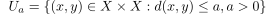

uniform structure induced by a pseudometric
1. Definition / proposition
Let  be a pseudometric.
Then the pseudometric induces a uniform structure defined by following fundamental system of entourages:
be a pseudometric.
Then the pseudometric induces a uniform structure defined by following fundamental system of entourages:

1
Let be a pseudometric.
Then the pseudometric induces a uniform structure defined by following fundamental system of entourages: